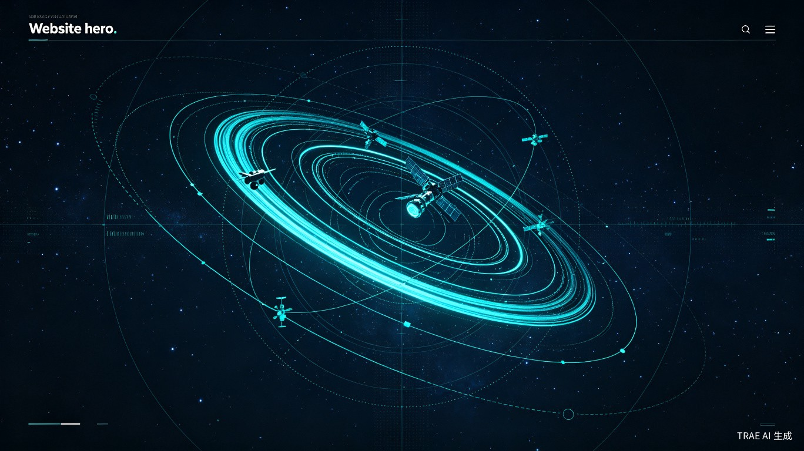
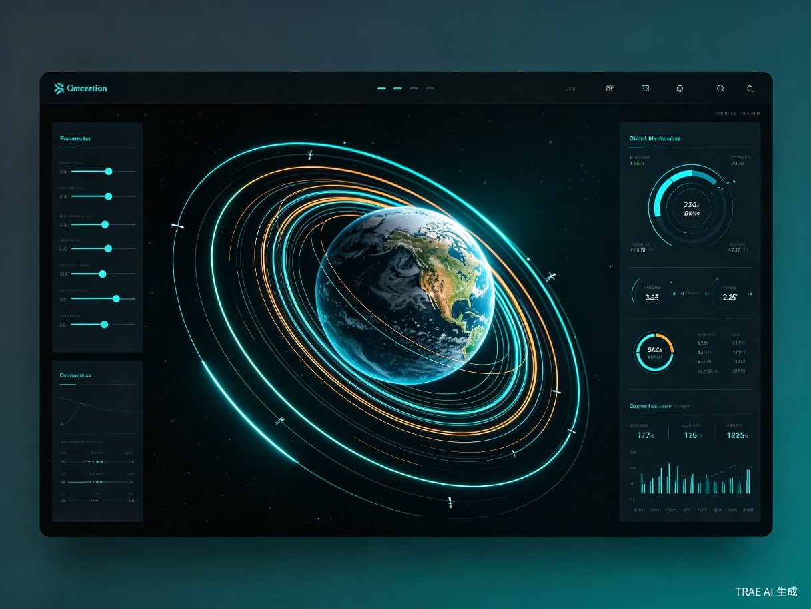
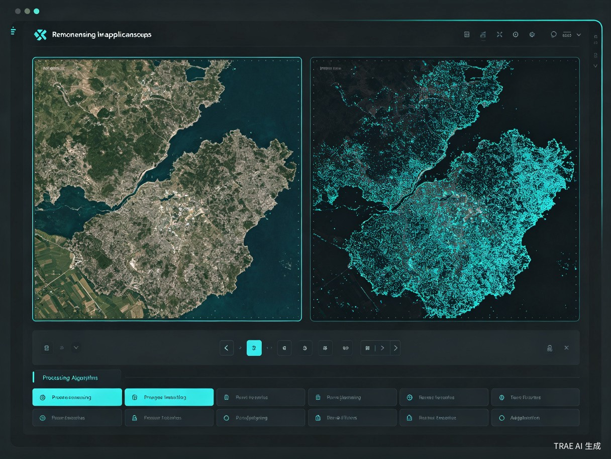
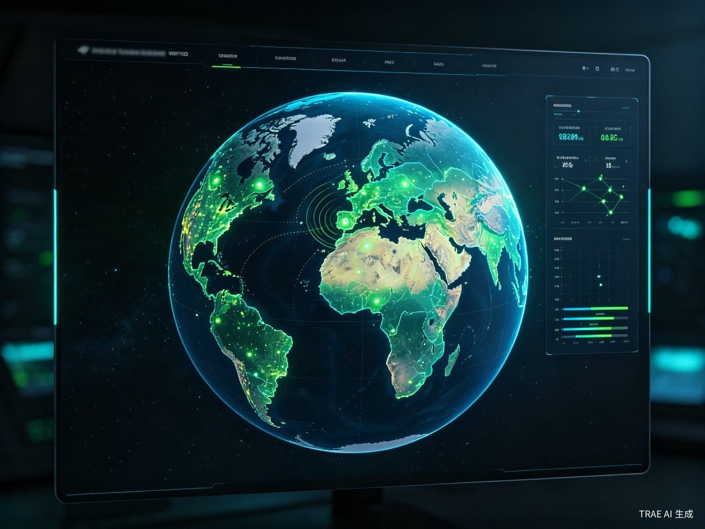
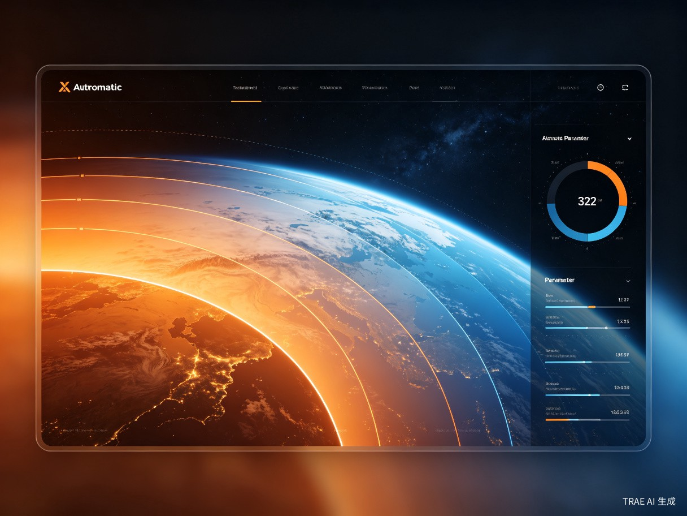
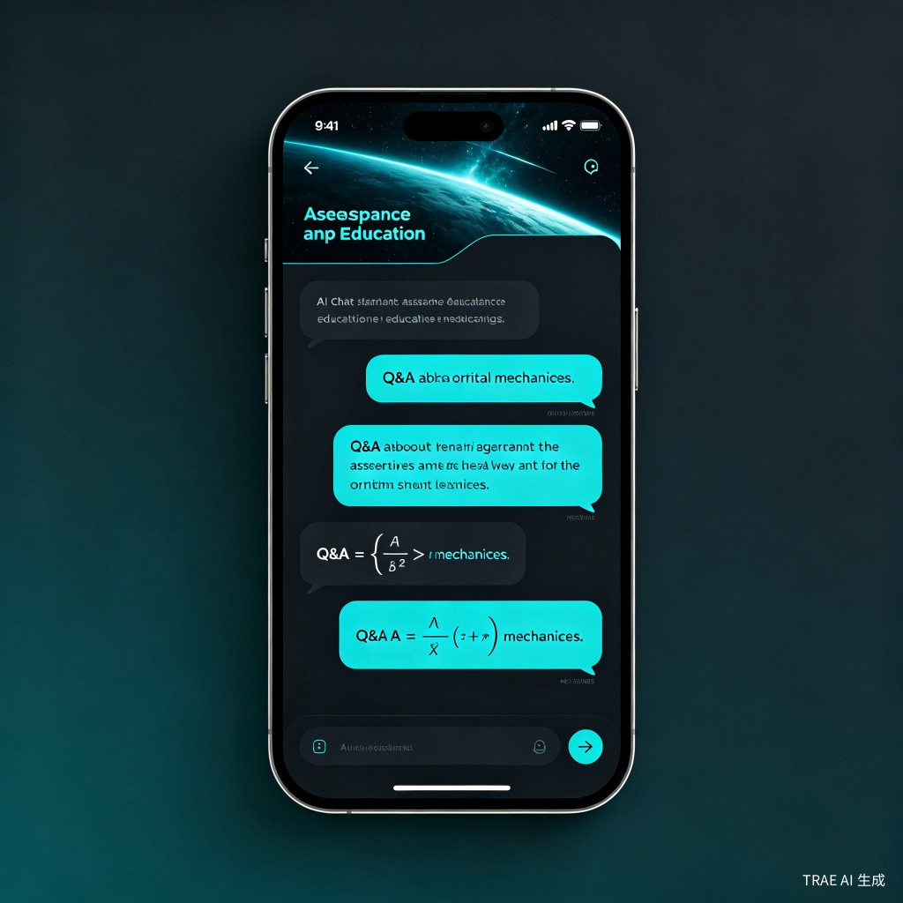

为什么做这个
航天领域的核心算法门槛极高，学习者在公式、代码和物理直觉之间反复横跳，大量兴趣在入门阶段被劝退。
轨道力学、遥感算法依赖大量数学推导，纯文本学习难以建立物理直觉，看懂了公式也不等于理解了过程。
想验证一个算法效果需要自己写代码画图，写错了不知道是公式理解错还是 bug，调试一次就是数小时。
STK、ENVI 等专业软件学习曲线陡峭、授权昂贵，大量功能用不上，对自学者和初学者极不友好。
产品核心
每个模块都是一个完整的交互式沙盒，拖拽参数即可观察算法效果，配合实时动画和理解性文本。

MODULE 01
开普勒轨道、霍曼转移、轨道机动 · 三维实时渲染，拖动滑块即可改变半长轴、偏心率，直观感受轨道变化

MODULE 02
图像滤波、分类、变化检测 · 左右对比展示原始与处理后结果，支持多种滤波器和分类算法

MODULE 03
卫星覆盖区域、链路预算、星座设计 · 三维地球表面实时渲染覆盖区，支持单星和多星模式

MODULE 04
大气层温度/密度剖面、电离层、空间天气 · 分层可视化展示从地面到宇宙空间的环境剖面
AI 加持
在探索任何算法时，都能随时唤起 AI 助手提问。不理解的公式、想深入的概念、参数选择的依据 —— 不需要切出去搜索，在沙盒内直接得到即时解答。

目标用户与价值
航天、遥感专业学生课设验证、考研复习、毕业设计，一个工具覆盖多个课程的核心算法实验需求
快速原型验证、算法对比、培训新人，在 STK 等重工具之外提供一个轻量级验证入口
对空天感兴趣的公众和自学者，零门槛体验轨道运行、卫星覆盖等航天概念的直观魅力
核心价值
不只是效率工具 —— 更想为航天领域的人才培养拓宽入口。降低学习门槛，让更多人对空天技术产生兴趣并持续深入，就是 AeroSandbox 的使命。